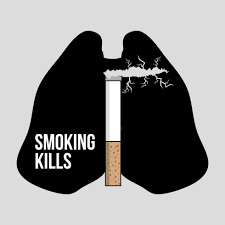

.jpg) 1. Tobacco use is responsible for 25% of all cancer deaths globally.
1. Tobacco use is responsible for 25% of all cancer deaths globally.
More than 100 reasons to quit tobacco
Tobacco causes 8 million deaths every year – don’t be one of them. The benefits of quitting tobacco are almost immediate. After just 20 minutes of quitting smoking, your heart rate improves. Within 1-9 months, coughing and shortness of breath decrease. Within 5-15 years, your stroke risk is reduced to that of a non-smoker. Within 10 years, your lung cancer death rate is about half that of a smoker. Within 15 years, your risk of heart disease is that of a non-smoker. If that’s not enough here are a few more reasons!
1. Tobacco use is responsible for 25% of all cancer deaths globally.
It threatens the health of your friends and family – not just you.
2. Over 1 million people die every year from exposure to second-hand smoke.
3. Non-smokers exposed to second-hand smoke are at risk of developing lung cancer.
4.. Cigarettes remain an important cause of accidental fires and resulting deaths.
5. E-cigarettes also expose non-smokers and bystanders to nicotine and other harmful chemicals.
6. Being exposed to second-hand smoke may increase the risk of progression from tuberculosis infection to active disease.
7. Being exposed to second-hand smoke is associated with type 2 diabetes.
Tobacco affects your looks almost immediately
8. Everything stinks! From your skin, to your whole house, your clothes, and your fingers and breath.
9. Tobacco causes teeth to yellow and creates excess dental plaque.
10. Smoking and chewing tobacco causes bad breath.
11. Tobacco makes your skin wrinkly, making you look older faster. Smoking prematurely ages the skin by wearing away proteins that give the skin elasticity, depleting it of vitamin A and restricting blood flow.
12. These wrinkles are more apparent around the lips and eyes and tobacco also makes skin leathery and dry.
13. Tobacco smoking increases the risk of developing psoriasis, a noncontagious inflammatory skin condition that leaves itchy, oozing red patches all over the body.
Smoking or using e-cigarettes around children compromises their health and safety
14. Smokers’ children suffer reduced lung function, which continues to affect them in the form of chronic respiratory disorders in adulthood.
15. Exposure of children to e-cigarette liquid continues to pose serious risks. There is a risk of the devices leaking, or of children swallowing the liquid.
16. E-cigarettes have been known to cause serious injuries, including burns, through fires and explosions.
17. School-aged children exposed to the harmful effects of second-hand smoke are also at risk for asthma through inflammation of the airways to the lungs.
18. Children under 2 years of age who are exposed to second-hand smoke in the home could get middle-ear disease possibly leading to hearing loss and deafness.
19. Quitting smoking decreases the risk of many diseases related to second-hand smoke in children, such as respiratory diseases (e.g., asthma) and ear infections.
Tobacco use has negative social consequences
20. You want to be a good example for your kids, friends, and loved ones.
21. Tobacco use can affect social interactions and relationships negatively.
22. Quitting means there are no restrictions on where you can go – you can mingle socially, without feeling isolated or having to go outside to smoke.
23. Quitting can make you more productive – you won’t have to stop what you are doing to have a smoke all the time.
It’s expensive - you could be spending your money on more important things
24. One study found that smokers burn through an average of $1.4 million in personal costs, includes spending on cigarettes, medical costs and lower wages brought on by smoking and exposure to secondhand smoke.
25. Tobacco use affects the health and productivity of workers making them prone to missed days at work.
26. Tobacco use contributes to poverty by diverting household spending from basic needs such as food and shelter to tobacco.
27. Tobacco use burdens the global economy with an estimated US$ 1.4 trillion in healthcare costs for treating the diseases caused by tobacco and lost human capital from tobacco-attributable sickness and death.
All forms of tobacco are deadly
31. Every year, over 8 million people die from tobacco.
32. Tobacco kills half of its users. Use of tobacco in any form robs you of your health and causes debilitating diseases.
33. Smoking shisha is just as harmful as other forms of tobacco use.
34. Chewing tobacco can cause mouth cancer, tooth loss, brown teeth, white patches and gum disease.
35. The nicotine in smokeless tobacco is more easily absorbed than by smoking cigarettes enhancing its addictiveness.